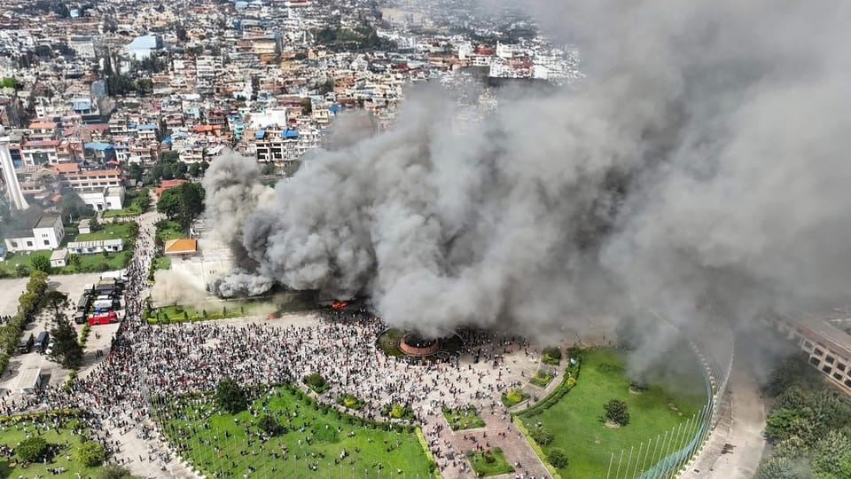

世界苦茶09月10日新闻 | 42条 | 尼泊尔抗议让总理辞职

尼泊尔抗议让总理辞职 | 俄罗斯空袭乌克兰进入波兰领空 | 以色列袭击卡塔尔首都多哈 | 川普将让已经执法冲击芝加哥 | 最高院继续支持特朗普扩权
苦茶数据
美元兑人民币：7.12（昨日7.12，前日7.13）
美元兑日元：147.34（昨日147.39，前日148.17）
上证指数：3813（昨日3815，前日3818）
标普500指数：6512（昨日6495，前日6481）
比特币：111469（昨日111542，前日111342）
布伦特原油：66.96（昨日66.37，前日66.30）
中国新闻
• 泄露文件显示中国公司向外国政府出售GFW： 一份泄露的超过10万份文件显示，一家名为“Geedge Networks”（积至(海南)信息技术）的中国公司一直在悄悄地向世界多国政府出售审查系统，而该系统似乎是以中国的“防火长城”为蓝本构建的。该公司投资者之一为中国的“防火墙之父”方滨兴。Geedge公司已在哈萨克斯坦、埃塞俄比亚、巴基斯坦、缅甸等国家开展业务。Geedge出售的这套监控系统“赋予了政府一种任何人都本不该拥有的巨大权力。这非常可怕。”文件显示，Geedge的核心产品是一款名为“TSG安全网关”。该工具被设计用于安装在数据中心内部，并可扩展至处理整个国家的互联网流量。每一数据包的互联网流量都会经过它扫描、过滤或直接拦截。Geedge的另一款核心产品是“网络叙事者”（Cyber Narrator）。非技术出身的政府客户可以通过它，以鸟瞰的视角实时访问监控的数据。操作员可以根据每个移动互联网用户的蜂窝网络通信来查看其地理位置，并分析该用户是否通过VPN服务访问互联网。泄露记录显示，Geedge还在中国的福建和江苏开展了试点项目。这些项目的截图和其他文件表明，其系统重点在于检测金融诈骗网站。新疆项目还在探索一些实验性功能，泄露文件中发现的一个原型功能被描述为个人“声誉评分”。每个互联网用户的基准分为550分，通过验证用户的个人信息（包括身份证、面部识别数据和就业详情）可以提高分数。如果用户的声誉评分未能超过600分，他们将无法访问互联网。 （翻评：所以互联网声誉评分就是存在的嘛。）
• 主汛期均温创同期最高 ：中国今年主汛期平均气温为历史同期最高。据中国网报道，中国国家气象中心副主任黄卓星期二在中国气象局新闻发布会上，介绍今年主汛期天气气候特征。黄卓指出，中国今年主汛期天气气候特征之一，是平均气温为历史同期最高、高温日数为次多。平均气温，较常年同期偏高1.1摄氏度，与2024年夏季并列为1961年以来历史同期最高；高温日数较常年同期偏多5.7天，为历史同期次多。
• 港府透露，涉黑暴在囚430人 ：香港保安局局长邓炳强星期二透露，目前仍有430名涉及黑暴及违反《香港国安法》的人士在囚。他表示，香港惩教署根据囚犯改造需要推出计划，三大改造方向包括认识中国历史及加强国民教育、心理及价值观重整，以及生涯规划和家庭关系修复，帮助因激进思想而犯罪的囚犯，建立正确价值观。据香港电台报道，邓炳强在立法会表示，过去20多年，被改造者的再犯率跌幅非常明显，由2000年的39.9%，下降至2022年的21.8%，这个成果来之不易，反映惩教署一直以来的努力。香港议员陈沛良和吴杰庄关注部份因黑暴犯罪入狱者，这些人年青且高学历，入狱前从事专业人士工作，获释后可能因有案底无法再重操旧业。两位议员表示，希望港府能与相关监管机构商讨，甚至提供证明，证明这些被改造者表现良好，让他们更容易重返社会。
• 山东破一贯道复辟案 ：中国近年加强宗教管理，严厉打击邪教。山东安丘警方破获一起一贯道复辟案，以末世论精神控制信众，有逾600人，包括30多名未成年人被裹挟，目前三名主犯已判刑。据中国反邪教网星期一发布的消息，去年4月以来，山东省潍坊市安丘市公安侦破一起一贯道复辟案件。经查，该组织利用会道门歪理邪说蛊惑、诈骗群众，2022年至2024年初迅速裹挟成员600余人，其中未成年人达30余人。 （翻评：一贯道出现确实说明经济太差了，这个是清末到1950年左右在山东的地方宗教，1950年以反革命罪被镇压。）
• 市监总局约谈外卖平台 ：中国国家市场监管总局星期二公布，已约谈主要外卖平台，平台也承诺杜绝不正当竞争，抵制恶性补贴。据中新网报道，关于外卖平台补贴争议，市场监管总局新闻发言人、新闻宣传司司长王秋苹在新闻发布会上说，市场监管总局及时约谈主要外卖平台后，平台快速响应，集体发声，承诺严守法律法规，杜绝不正当竞争，抵制恶性补贴，推动行业规范有序发展。王秋苹也说，市场监管总局将密切关注外卖行业竞争情况，要求提升服务质量，严守食品安全底线，保障消费体验；督促平台合理控制补贴，避免冲击正常价格体系；推动平台加大对商家的扶持力度，提高骑手权益保障，构建消费者、商家、骑手、平台多方共赢的良性生态。
• 北京老年人口首破500万 ：中国首都北京市一年增加近20万老年人，常住老年人口首次突破500万大关。据北京日报客户端报道，2025北京养老服务行业发展四季青论坛星期二开幕，并发布《2024年北京市老龄事业发展报告》。报告显示，2024年全市60岁及以上常住人口达514.0万人，首次突破500万人大关。这一数字比2023年增加了19.2万人。
• 长江口交通管制疑为福建舰 ：中国官方宣布，星期三在长江口一个大型船舶深水航道出口实施交通管制，时值舆论猜测海军第三艘航空母舰福建舰可能在9月份的抗战纪念日入列。中国海事局官网星期一发布来自上海海事局的航行警告称，9月10日一大型船舶深水航道出口实施交通管制，早上10时30分至晚上8时，对长江口深水航道进口船舶进行交通管制；下午2时15分至下午4时30分，对长江口深水航道出口船舶进行交通管制。下午2时30分至4时，当局也对302灯浮301灯浮42灯浮连线至长兴岛码头水域进行交通管制。
• FCC撤销多家中国实验室认证 ：美国监管机构星期一宣布，以国家安全关切为由启动程序，撤销对七家被指是中国政府拥有或控制的测试实验室的认证，禁止这些实验室测试美国电子产品。据路透社报道，美国联邦通信委员会已在5月投票通过最终裁定，禁止那些被认为对美国国家安全构成威胁的中国实验室，对在美国销售的电子设备，例如智能手机、相机和电脑进行测试。FCC星期一公布，涉及另外四家中国实验室的认证已在5月到期，也将不被更新，其中包括两家曾申请延长认证期限的实验室。
亚太印太新闻
• 蔡英文卸任后首访日本 ：日本媒体报道，台湾前总统蔡英文卸任后，首次到访日本。据日本产经新闻报道，蔡英文已在星期二到访日本。报道引述多名日台消息人士称，蔡英文于星期二至星期五在日本开展私人行程，并没有计划与日本官员或政治人物会面。这是蔡英文2024年5月卸任台湾总统后，首次到访日本。
• 柬埔寨新机场启用 ：柬埔寨一座耗资20亿美元、由中国承建的机场正式投入运营，为旅游业复苏带来希望。中新社报道，柬埔寨德崇国际机场星期二正式投入运营，柬埔寨国家航空公司执飞的K6611航班，当天搭载来自中国的旅客抵达金边，成为首个在该机场着陆的国际航班。另据法新社报道，为迎接160名乘客，机场举行水炮表演，以及传统的高棉舞蹈表演。
• 印尼新财长稳流动性控赤字 ：印度尼西亚新财长普尔巴亚说，他将与央行合作，缓解金融市场的流动性，以释放用于经济活动和政府项目的资金。路透社报道，财政部星期二举行正式的交接仪式。普尔巴亚在仪式上承认，在全球科技和地缘政治挑战的背景下，他的工作并不轻松。普尔巴亚随后与总统普拉博沃举行首次财政部长内阁会议，承诺将年度预算赤字限制在GDP3%以内。
• 北检抗告柯文哲交保 ：台湾民众党前主席柯文哲交保获释仅一天，台北地检署就提出抗告。综合台湾《联合报》和中时新闻网报道，针对柯文哲交保获释，台北地检署星期二下午6时许拟出四个理由，向法院提出抗告。台北检方认为，涉犯公益侵占罪仍有重要证人尚未调查完毕，因此在证人交互诘问完毕前，仍有羁押的必要。
• 韩美3500亿基金陷僵局 ：美国和韩国在3500亿美元投资基金的细节问题上陷入僵局；这项基金是两国达成更广泛贸易协议的一部分。韩国高官警告，若双方无法缩小分歧，就连造船合作也可能面临风险。韩国总统府政策室长金容范星期二在一场论坛上说，首尔一直向美方强调，韩国不能接受与日本上周敲定的5500亿美元投资承诺相同的条款，理由是两国经济体量存在差距，而且可能对外汇市场造成冲击。金容范说：“如果无法达成协议，‘让美国造船业再次伟大’这一项目恐怕连起步都很难。”
• 郝龙斌有意参选国民党主席 ：国民党前副主席、台北前市长郝龙斌星期二首次表态有意参选国民党主席，坦言“有参选意愿和准备”。他表示自己比较公正，在党内和与民众党进行协调，大家比较能接受，并指未来国民党领袖的重大任务，就是推动在野合作，蓝白一定要合，这也是党内最大的声音。国民党主席将在10月18日进行改选，目前已有九人表态参选。原本呼声最高的台中市长卢秀燕确定不参选后，党内大老与正副议长系统所整合的“挺卢派”转向支持郝龙斌。据中时电子报、自由时报等报道，郝龙斌星期二接受媒体人王浅秋专访，首度坦言，虽然现在不能称是国民党参选人，但有参选的意愿和准备，也在各方面征询意见。
• 朝鲜测新型洲际导弹发动机 ：朝中社星期二报道，朝鲜导弹总局和化学材料研究院前一天对将被搭载于新型洲际弹道导弹的大功率固体燃料发动机进行地面点火试验，朝鲜领导人金正恩现场观摩。报道指出，大功率固体燃料发动机采用碳纤维复合材料制造，最大推力可达1971千牛。这是发动机的第九次地面点火试验，属于研发阶段的最后一次试验。韩联社据此推测，朝鲜今后将全面研发搭载发动机的新型洲际弹道导弹。
• 泰国最高法院裁定达信须入狱 ：泰国最高法院星期二裁定，因贪污滥权案被判处监禁的泰国前首相达信，在获得假释前一直住院留医，完全没有入狱服过一天刑期，是不合法的。综合路透社和法新社报道，泰国最高法院裁定达信必须为此入狱服刑一年。由五名法官组成的合议庭在裁决书中说，达信在刑期期间长期住院，责任不完全在于医生，是达信故意延长住院时间。法官说，达信知道他的病情不紧急，住院不能算作服刑。 （翻评：为泰党被泰国准军政府抛弃。）
• 尼泊尔抗议者9月9日无视宵禁并与警方发生冲突，总理奥利当天辞职： 尽管政府9日已解除对社交媒体的封禁，但示威活动仍愈演愈烈。当天，抗议者袭击了总统府、总理官邸以及多个政府机构建筑，部分官员的私人住宅也被纵火。抗议者将警察8日对人群开枪归咎于政府，并呼吁罢免奥利。奥利当天宣布辞职，总统鲍德尔已接受辞呈，并任命奥利领导看守政府，直至新政府成立。鲍德尔呼吁抗议者进行对话，寻求和平解决方案，阻止局势进一步升级。军方亦呼吁冷静并敦促政治对话。辞职消息传出后，抗议者为胜利欢欣鼓舞。但直到晚些时候，数万名抗议者仍留在街头，封锁道路。由于安全部队未干预，因此没有发生冲突或暴力。
科技新闻
• 澳洲严管AI聊天机器人 ：澳大利亚网络安全监管机构说，那些鼓吹自杀或进行露骨对话的人工智能聊天机器人，对儿童构成“明确而迫在眉睫的危险”，澳洲因此推出了针对这类服务的新规。新规适用于社交媒体平台、游戏网站及AI服务等多种在线服务，要求显示或传播色情等内容的网站必须使用年龄验证技术阻止儿童访问。应用商店必须确保应用的评级适当，并对所有下载的用户进行年龄验证，违规者最高可被处以5000万澳元的罚款。
• 微软要求员工每周返岗三天 ：微软公司表示许多员工必须很快每周回办公室工作三天。微软公司首席人事官艾米·科尔曼周二在备忘录中写道：当我们实时地基于彼此的想法共同构建时，最有意义的突破就会出现。”她写道，该要求将于明年二月底首先针对西雅图地区居住在工作场所50英里范围内的员工实施，随后将扩展到美国其他地区并在全球推行。科尔曼写道，这项变革并非为了缩减员工总数。她写道，相反，数据显示员工当面协作时能取得更好成效。科尔曼在备忘录中写道：“在我们构建将定义这个时代的人工智能产品时，我们需要聪明人并肩工作所产生的能量和动力，”
• 苹果发布iPhone Air等新品 ：周三凌晨，消费电子巨头苹果公司举行九月新品发布会。与预期完全一致，库克拿出了包括 iPhone Air 在内的四款新手机，同时更新了Airpods Pro 3以及3款Apple Watch。最受关注的iPhone Air搭载A19 Pro，但规格是6CPU+5GPU的组合。由于iPhone Air没有实体卡槽，所以只能用eSIM。苹果公司中国官网显示，iPhone Air是目前中国大陆地区唯一支持eSIM的iPhone，同时境外购买的iPhone无法安装中国大陆运营商提供的eSIM描述文件。苹果同时确认，中国联通是中国大陆地区唯一受支持的 iPhone eSIM 运营商，买完手机后用户得去线下营业厅激活 eSIM。
财经新闻
• 美日关税将于9月16日前下调 ：日本首席贸易谈判代表赤泽亮正说，美国对日本商品包括汽车和汽车零部件等征收的关税预计将在9月16日前下调。路透社报道，赤泽亮正星期二在新闻发布会说，9月9日发布的美国《联邦公报》正式确认美国总统特朗普签署了美日贸易协议的行政令。他指出，修订后的日本商品关税税率将在行政令公布的七天内生效。美日于7月达成一项贸易协议，同意将包括汽车在内的日本商品关税下调至15%，交换条件是日本向美国投资5500亿美元，部分以贷款形式提供。
• 欧盟考虑就进口俄罗斯油气一事制裁中国： 欧盟官员正在讨论针对中国及其他第三国的潜在制裁措施，理由是购买俄罗斯石油和天然气。在先前旨在迫使俄罗斯总统普京进行和谈的努力失败后，美国总统特朗普称，他对与欧盟协同采取针对俄罗斯的新措施持开放态度。据三名听取过初步讨论情况的人士透露，欧盟官员和外交官上周日开始就新制裁方案的内容举行磋商，很多次讨论中都提到针对中国的潜在二级制裁，中国是俄罗斯油气的主要买家。据称，欧盟的二级制裁提议处于 “非常初期的阶段”，而且，除非美国也把矛头对准中国的能源进口，否则欧洲联盟不大可能采取这些二级制裁措施。
• 降息预期推金价再创新高 ：投资者对美联储今年内降息的预期提高，推动黄金价格连续第二天创新高。彭博社星期二报道，现货黄金盘中一度上扬0.3%，达到每安士3647美元，超越星期一创下的每安士3600美元新高价位。美国联邦储备局议息决策下周揭晓，此前发布的美国非农就业数据疲软，促使交易员预期美联储今年会降息三轮，包括下周调降25个基点。这种市场情绪也推动近两个交易日的金价上涨2.5%。低利率环境通常会令黄金资产表现良好。
• 中国市场八月乘用车销量增长进一步放缓： 周一公布的乘联分会数据显示，八月乘用车零售量同比增长4.6%，至200万辆，低于七月6.3%的增幅。八月乘用车零售量较七月增长8.2%。中国政府上个月发起了一场行动，以控制面临产能过剩的行业中不健康的价格竞争。乘联分会表示，该行动稳定了汽车市场，汽车制造商上个月停止或减少了促销和降价活动。乘联分会表示，包括纯电动汽车和插电式混合动力汽车在内的新能源汽车零售量同比增长7.5%，至110万辆。电动汽车巨头特斯拉八月在中国的销量下降4.0%，至83,192辆。
• Temu降价重返美国市场 ：美国总统特朗普的关税政策带来数月的动荡后，中国跨境电商平台 Temu 正以大幅折扣重返美国市场，试图从竞争对手 Shein 手中夺回市场份额。根据追踪，Temu在9月初至少有24种畅销商品的价格相较于四月底平均下降18%，有些价格降幅甚至达60% 。此前在关税重创下， Temu 曾短暂退出美国市场转而进军欧洲和世界其他地区。除了大幅折扣外， Temu 还停止向买家收取进口费，这些费用曾导致价格大幅上涨，消费者支付的税款有时甚至超过商品本身价格。一名商家表示， Temu 最近在面向卖家的入口网站上加强了提醒力道，呼吁商家降价以换取更好的流量，同时加强在美国的广告投放。
• 戴尔再启裁员波及中国 ：美国电脑制造商戴尔科技年内再次启动对中国员工裁员计划。两名收到通知的知情人士透露称，戴尔本周将与裁员计划内的员工进行一对一沟通。其最后工作日已定为10月10日，在此之前，受影响员工可申请公司内部的其他空缺职位。此次裁员主要涉及戴尔位于上海和厦门的EMC存储部门及客户端解决方案集团。其中一人还表示，这是近几个月来的第三轮裁员，此前两轮的离职日期分别为 8月15日和 9月12日。连日以来，有多位网友发帖称，上海五角场的COE办公室经历了大规模裁员，包括中山公园CDC、五角场COE等多个核心部门，赔偿N+3。
俄乌战争
• 俄滑翔炸弹袭乌村致24死 ：俄罗斯一枚滑翔炸弹9月9日袭击了乌克兰顿涅茨克地区的亚罗瓦村，造成至少24人死亡、19人受伤。该村距离前线不到10公里。袭击时，人们正排队领取养老金。死者中有23人是养老金领取者。乌克兰总统泽连斯基再次敦促国际社会，尤其是美国对俄罗斯实施额外制裁。知情人士称，欧美官员8日晚在美国会面讨论对俄施加经济压力。会谈将于9日继续。
• 泽连斯基要求全球对雅罗瓦袭击作出强烈回应： 乌克兰总统弗拉基米尔·泽连斯基在晚间讲话中表示，世界必须惩罚俄罗斯的恐怖袭击，其中之一是当天对顿涅茨克地区雅罗瓦的打击。据他称，国际社会对侵略者的压力迄今仍不足。他指出，在袭击雅罗瓦时，俄军完全清楚攻击目标，且明确看到袭击是针对平民——正在领取养老金的普通老人。截至目前，已有24人死亡、19人受伤。
• 波兰总统纳夫罗茨称普京准备攻击其他国家： 波兰新当选总统卡罗尔·纳夫罗茨基周二抵达赫尔辛基，展开为期一天的工作访问，由芬兰总统亚历山大·斯图布接待。正如外界预期，两国元首的讨论集中在安全政策，特别是针对俄罗斯对乌克兰的持续战争。在与斯图布的联合记者会上，纳夫罗茨基表示，俄罗斯总统普京已准备好攻击除乌克兰之外的其他国家。纳夫罗茨基和斯图布都与美国总统唐纳德·特朗普保持着极佳的个人关系。仅就任一个月的纳夫罗茨基，已经在华盛顿与特朗普会面。他说，特朗普了解普京带来的巨大威胁，并补充道：“我们不信任普京。” （翻评：马上应验。）
• 波兰称击落进入其领空的无人机，正值俄罗斯袭击乌克兰期间： 波兰军方周三凌晨表示，在俄罗斯袭击邻国乌克兰期间，击落了侵犯其领空的无人机，这可能成为对欧洲的重大挑衅。波兰作战司令部在X平台发布声明称：“武器已被动用，有关部门正在积极搜寻被击落的物体。”声明还表示军事行动正在进行，并敦促居民留在家中。关于这些“无人机类物体”的更多细节尚未披露。波兰是北约成员国，该跨大西洋防御联盟奉行“对一国的攻击即对所有成员的攻击”原则。美国国务卿马尔科·鲁比奥告诉CNN，他已收到关于俄罗斯无人机飞越波兰的简报。
• 特朗普助手斯科特·贝森特称美国“愿意采取强硬措施”对付俄罗斯：“一切照旧已行不通”： 美国财政部长斯科特·贝森特周二警告称，华盛顿愿意就俄罗斯对乌战争采取强硬行动。这位特朗普助手的评论出现在他与欧盟制裁特使周一会谈之后。根据欧盟官员消息，美欧官员周一和周二举行会议，计划加强对俄罗斯的制裁，因为莫斯科并未从乌克兰撤退。贝森特在X平台上写道：“美国和欧盟在结束乌克兰战争的重要性上保持一致，作为总统战略的一部分，所有选项都在桌面上。”欧盟制裁特使大卫·奥沙利文一直主导各国的全球行动，以阻止莫斯科规避制裁，目前他率团在美国。
国际新闻
• 以方称独自发动刺杀 ：消息称以色列暗杀哈马斯高层的行动失败，以色列总理办公室称这次袭击是单独行动。半岛电视台报道，以色列总理内坦亚胡办公室星期二在社交媒体上发文称：“今天针对哈马斯恐怖分子头目的行动，完全是以色列的独立行动。”帖子也写道，以色列发起这次袭击，也将承担全部责任。
• 以军集结将攻加沙城 ：以色列总理内坦亚胡星期一说，以军地面部队正在集结，即将攻入加沙城，并警告当地居民马上离开。他此前警告，如果哈马斯不释放最后48名人质并投降，以色列将在加沙地带“以一场强大飓风”之势升级空袭和地面行动。新华社报道，内坦亚胡星期一在特拉维夫市视察以色列空军指挥中心时说，以色列空军过去两天在加沙城摧毁多座巴勒斯坦武装人员使用的高层建筑，而这仅仅是“加沙城地面行动的开端”。
• 多哈爆炸以军袭哈马斯 ：卡塔尔多哈发生多起爆炸，以色列证实对哈马斯高层领导人进行精准打击，称已事先通知美国，并获得美国总统特朗普的批准。法新社报道，卡塔尔多哈星期二传出爆炸声。有目击者称，多哈的卡塔拉一带窜出滚滚浓烟。美国新闻网站Axios记者拉维德引述以色列官员报道，多哈爆炸是针对哈马斯人员的暗杀行动。
• 卡塔尔否认白宫关于特朗普在以色列袭击前发出警告的说法： 美国总统唐纳德·特朗普政府称在以色列袭击多哈哈马斯谈判代表前已通知卡塔尔官员，但这一说法遭到卡塔尔否认。白宫周二的声明发布于以色列袭击卡塔尔首都多哈一处居民区数小时后。卡塔尔一直是美国支持的加沙停火谈判的主要调解人。白宫发言人卡罗琳·莱维特对记者说：“美国军方已通知特朗普政府，以色列正在攻击哈马斯，而不幸的是他们位于多哈的某个区域。”她还说：“单方面轰炸卡塔尔——一个主权国家，也是美国的亲密盟友，正在与我们一道勇敢冒险促成和平——并不能推进以色列或美国的目标。然而，消灭哈马斯——这些靠加沙人民苦难牟利的组织——是一个值得的目标。”
• 特朗普签药品广告令 ：美国总统特朗普星期二签署一项关于药品广告的行政令。路透社报道，美国高级政府官员说，政府星期二将向制作药品广告的公司发出约100封强制执行函和数千封警告函。他们指出，正在与制药行业合作，探讨以最惠国价格进行潜在的直接面向消费者售卖药品。
• 马克龙任勒科尔尼为总理 ：法国总统马克龙星期二任命其忠实支持者勒科尔尼为新总理，打破外界对他可能转向左翼人选的预期。综合路透社和彭博社报道，39岁的勒科尔尼自2022年5月起出任法国国防部长，曾为保守派，在2017年马克龙首次竞选总统时转而力挺马克龙。选择勒科尔尼表明马克龙决心继续以少数派政府执政，而且不会放弃亲商改革议程，包括削减企业和富人税收并提高退休年龄。
• 巴黎多座清真寺遭挂猪头 ：法国巴黎地区的一些回教堂前被人挂了至少九个猪头，警方谴责这是对回教徒的侮辱。法新社报道，巴黎警察局长努涅斯星期二说，当局在一些回教堂前发现至少九个猪头，警方不排除发现更多猪头的可能性。“这些猪头被遗弃在一些回教堂前……巴黎有四个，近郊有五个。”另据路透社报道，努涅兹说，相关调查已立即展开，“一切措施都在进行中，务求查明这些卑劣行为的作案者”。
• 美移民执法将赴伊利诺伊 ：美国国土安全部星期一宣布，其下属机构美国移民与海关执法局将在伊利诺伊州展开移民执法行动，并称此次行动针对的是那些“涌入芝加哥和伊利诺伊州实施犯罪的非法移民”。新华社报道，美国国土安全部助理部长麦克劳克林说，多年来，伊利诺伊州州长普里茨克和其他支持“庇护政策”的从政者不断将帮派成员、强奸犯、绑架犯，以及毒贩释放到芝加哥街头，将美国人的生命置于危险之中。特朗普总统和国土安全部长诺姆已经传递出明确信息：没有任何城市会成为犯罪非法移民的避风港。对于这一最新行动，民主党人表示强烈不满。普里茨克在社媒平台说，这不是在打击犯罪，打击犯罪须要支持与协调，然而在过去几周里，“我们完全没有看到类似的行动”。特朗普政府并没有采取与伊利诺伊州合作保障公共安全的措施，而是把重点放在恐吓伊利诺伊州民众上。
• 爱泼斯坦生日贺信引争议 ：爱泼斯坦遗产管理方的律师近期将特朗普送给爱泼斯坦的生日贺信副本提交给国会，众议院监察委员会民主党人于8日对外公布了落款有特朗普签名的贺信副本。白宫发言人再次否认贺信中的画和签名是特朗普所作。
• 美最高法院放行移民突击 ：美国最高法院再一次为总统特朗普的强硬移民政策开绿灯，允许执法人员继续在南加利福尼亚州针对可能因种族或语言面临驱逐的人，进行突击搜查。最高法院的自由派大法官指这项裁决意味着拉丁裔“随时可能被捕”，而加州州长纽森预测洛杉矶将出现“种族恐怖游行”。路透社报道，美国最高法院星期一批准司法部的请求，暂停洛杉矶一名法官的命令。这条命令禁止执法人员单凭种族、族裔或英语发音带有西班牙语或其他语言的口音等因素，在缺乏“合理怀疑”证据的情况下拦截或拘留民众。最高法院仅发布简短的裁决书，驳回一群拉丁裔民众对特朗普移民突击行动发起的挑战。裁决书没有署名也未附带任何解释。 （翻评：美国完犊子了。）
• 白宫威胁对巴西动用“军事力量”，博索纳罗面临政变图谋清算： 两名巴西最高法院大法官表示将投票裁定极右翼前总统雅伊尔·博索纳罗因涉及刺杀现任总统卢拉及其他官员的政变图谋而有罪之际，白宫发言人周二暗示，美国总统唐纳德·特朗普可能对巴西动用军事力量。白宫发言人卡罗琳·莱维特在例行记者会上表示，特朗普是博索纳罗的坚定盟友，一直称对博索纳罗的司法追责是“猎巫行动”，并已“在制裁和关税运用方面对巴西采取了重大行动”。 （翻评：纯粹的神经病行为发言，干涉其他国家的司法和中国有什么区别？）